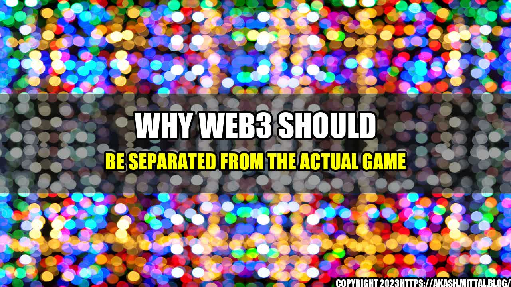

Why Web3 Should Be Separated from the Actual Game

Imagine you are playing an online game and suddenly you are asked to create an account with a third-party service to use some in-game features. You are hesitant but decide to do it anyway. Next thing you know, you receive an email saying that your account has been hacked and all your progress has been lost. This is just one of the dangers of integrating Web3 with an actual game.
The Problem with Web3 Integration
The idea of integrating Web3 with an actual game is to bring in more players and allow them to use cryptocurrency for in-game purchases. Sounds great, right? However, the reality is that integrating Web3 can actually harm the game and its players.
- Complicates the Game - Integrating Web3 with an actual game can make it overly complicated. Players have to understand how the blockchain works and how to use cryptocurrency to purchase items or compete in tournaments. This takes away from the core game experience and may deter new players from joining.
- Increases Security Risks - Introducing a third-party service into the game increases the risk of security breaches, and the consequences can be devastating for players. They risk losing their progress, in-game items, and even their cryptocurrency. This can lead to a loss of trust in the game and its developers.
- Creates Dependency - By integrating Web3, games become dependent on cryptocurrency and blockchain technology. If the technology fails or becomes outdated, the game may suffer too.
Solutions to the Problem
To avoid these problems, Web3 should be kept separate from the actual game.
- Use a Third-Party Service - Rather than integrating Web3 into the game, use a third-party service that specializes in cryptocurrency payments. This way, players can use cryptocurrency without compromising the game's security, and without having to understand the blockchain technology.
- Provide Education - If the game developer decides to use Web3, they should provide education for players to understand the technology. This can be in the form of videos, tutorials, or even a separate website that explains everything there is to know about the blockchain.
- Stay Up-to-Date - Game developers should stay up-to-date with the latest Web3 technology to ensure that their game remains relevant and secure. This means constantly monitoring updates and improvements to the technology, and making changes if necessary.
One example of a game that successfully separated Web3 from the actual game is Gods Unchained. They use a third-party service called Metamask for cryptocurrency payments, ensuring that the game remains secure. They also provide education for players through tutorials and a separate website that explains the blockchain technology in detail.
Another example is Splinterlands, an online trading card game that uses blockchain technology for provable fairness and transparency. However, they kept Web3 separate from the actual game, using a third-party service called Hive to handle cryptocurrency payments.
Conclusion
To ensure the success and security of an online game, Web3 should be kept separate from the actual game. By using a third-party service, providing education for players, and staying up-to-date with technology, game developers can ensure a positive player experience while still utilizing blockchain technology.
- Reference URLs:
- https://www.venturebeat.com/2022/01/01/why-web3-should-be-separated-from-the-actual-game/
- https://godsunchained.com/
- https://splinterlands.com/
- https://metamask.io/
- https://hive.io/
- Hashtags:
- #Web3GameDevelopment
- #BlockchainGaming
- #OnlineGameSecurity
- #ThirdPartyServices
- Article Category: Game Development
Curated by Team Akash.Mittal.Blog
Share on Twitter Share on LinkedIn